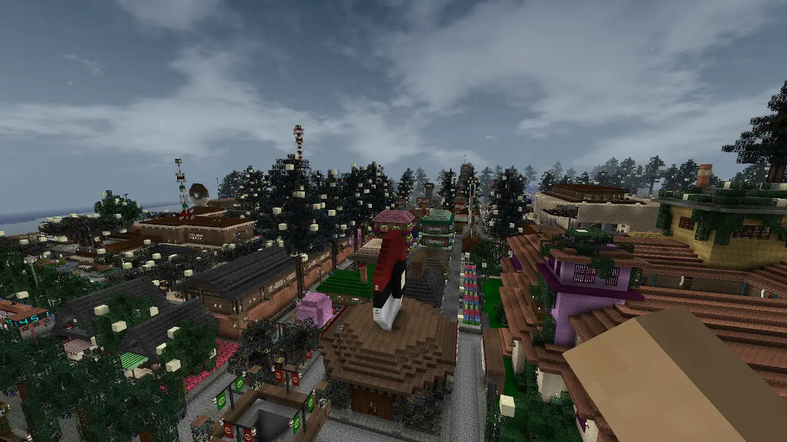

The program
Clot DeLora is the SurvivalCraft2 World File that has an aesthetic, wooden traditional look, American styled design and has a winter weather. It has a mix of Pokémon, Megaman BN series and many more popular video games such as Among Us, Minecraft, and Roblox.
Information about it.
This SurvivalCraft2 World was owned by DeLora X Power Studios created in April 2020. After the year of 2022, VJDY Official Productions collaborated with DeLora X Power Studios to create this possible changes to minimal look. There are a lot of new buildings, town, and county which you can use this as a roleplaying.
Casts
| STARRING | POKÉMON BLACK AND WHITE 2 (UNOVA REGION) |
PANGO SIBLIINGS | RUSSIAN CITIZENS | DELORA DONATORS |
|---|---|---|---|---|
| vjdyofficial | Nate Martinez | Jessie Pango | Margot dé Santa | Maria Davidson |
| Gracie Hansel | Rosa Martinez | Difa Pango | Zorro Roscalov | Johnny Mayanan |
| Chole Hansel | Aurea Juniper | Leanna Hakinnen | Raina Malumay | |
| Anna Hansel | Cedric Juniper | Mishca Saznetsov | ||
| Clara Martinez | ||||
| Kate Adams |
| CDPD POLICE OFFICERS | JAICA SISTERS | ALBANIAN CITIZENS | AMERICAN CITIZENS | SERBIAN CITIZENS |
|---|---|---|---|---|
| Nico Mindanao | Kaye Jaica | Liz Islamaj Lopez | Zara Aline | Sofjia Pesic |
| Jamaica Abadesa | Azrealiza Jaica | Marvin Aguátin | Keith Perez | Marko Nikolic |
| Lassie Jaica | Christian Lopez | Ben Acosta | Zora Blagojevic | |
| Thea Ganados | Brent Davis | |||
| Kelly Jackson |
Buildings and Places
This world was edited by me as the part for Clot DeLora, and I add a lot of buildings here.
| Hotels and Houses | Restaurants | Parks and Recreations | Shops | Establishmets |
|---|---|---|---|---|
| DeLora Star Hotel | DeLora Restaurant | DeLora National Park and Resort | DeLora Market | DeLora FM |
| DeLora Seksi Hotel | Café India | DeLora Plaza | DeLora Shop | Pokéstar Studios |
| Delora Sweet Hotel | Burger King | Horse Recing Plaza | DeLora Driftveil Market | Blue Gomo |
| DeLora Canto House | Taco Bell | Skyarrow Ranch | Kaye Collada's Plant Shop | DeLora Terminal |
| Small DeLora | Pokémon Cafe | DeLora Beach Resort | Cloth Store | DeLora Mall |
| Big DeLora | Pokémon Milktea | Tambayan ng mga Pokémonista | Tool Shop | Pokémon Center |
| Casa de VJDY | 7-Eleven | DeLora Garden | Vet | Pokémon Gym |
| Casa de Azrealiza | Sharo Bar | DeLora Stay and Relax | Weapon Shop | Gas Gas |
| Casa de Moderna | Nacrene Café Warehouse | Internet Café | Sharo Bank | |
| Casa de Machu | DeLora Database Center | |||
| Casa de Buena | DeLora Office | |||
| Casa de Gianan | DeLora Event Center | |||
| Casa de Pado | City Hall | |||
| Casa de Nathan | WAZA National Headquarters | |||
| Kaye Collada's House 3502 | DeLora Strand School | |||
| May Nato's House 3501 | Onataglam Server Center | |||
| DeLora Church |
Teaser
English Desciption
A vibrant sunrise over Echo Ridge, showcasing its picturesque townscape. 🌄 "Welcome to Echo Ridge DeLora—a town of beauty, community, and endless possibilities. But beneath the charm lies Clot DeLora, a permanent town cloaked in mystery. In this sandbox experience, you’ll forge your path, uncover secrets and thrive in a world where danger meets creativity. Prepare for the adventure of a lifetime. Right here on Echo Ridge DeLora, every Mondays, Wednesdays, and Fridays on VJDY Official Plus!
Tagalog Description
Isang makulay na pagsikat ng araw sa ibabaw ng Echo Ridge, na nagpapakita ng nakamamanghang tanawin ng bayan nito. 🌄 "Welcome sa Echo Ridge DeLora—isang bayan ng kagandahan, komunidad, at walang katapusang mga posibilidad. Ngunit sa ilalim ng alindog ay si Clot DeLora, isang permanenteng bayan na nababalot ng misteryo. Sa karanasang ito sa sandbox, Gawin ang landas mo, matuklasan ang mga sikreto, at umunlad sa mundo ng panganib at pagkamalikhain. Abangan at Maghanda para sa pakikipagsapalaran ang lahat ng ito mismo sa Echo Ridge DeLora tuwing Lunes, Miyerkules, at Biyernes dito sa VJDY Official Plus!
Central Bikol Description
Sarong makolor na pagsirang kan saldang sa ibabaw kan Echo Ridge, na nagpapahiling nin ngalas na tanawon kan banwaan. 🌄 "Welcome sa Echo Ridge DeLora—sarong banwaan nin kagayunan, komunidad, asin daing sagkod na posibilidad." Alagad sa irarom kan anting-anting yaon an Clot DeLora, sarong permanenteng banwaan na natatahoban nin misteryo. Sa eksperyensya na ini sa sandbox, Magbilog kan saimong dalan, magdiskubre nin mga sekreto, asin mag-uswag sa sarong kinaban nin peligro asin pagkamapagmukna. Antabayan asin Maghanda para sa pakikipagsapalaran sa Echo Ridge DeLora kada Lunes, Miyerkules, asin Byernes digdi sa VJDY Official Plus!
Cebuano Description
Usa ka mabulukon nga pagsubang sa adlaw ibabaw sa Echo Ridge, nagpadayag sa usa ka makabungog nga talan-awon sa lungsod niini. 🌄 "Welcome sa Echo Ridge DeLora—usa ka lungsod sa katahum, komunidad, ug walay katapusan nga mga posibilidad. Apan sa ilawom sa kaanyag nahimutang ang Clot DeLora, usa ka permanente nga lungsod nga gitabonan sa misteryo. Niini nga kasinatian sa sandbox, Pagpanday sa imong dalan, pagdiskobre sa mga sekreto, ug pag-uswag sa usa ka kalibutan sa kapeligrohan ug pagkamamugnaon. Tan-awa ug Pag-andam alang sa panimpalad sa tanan niini mismo sa Echo Ridge DeLora! matag Lunes, Miyerkules, ug Biyernes dinhi sa VJDY Official Plus!